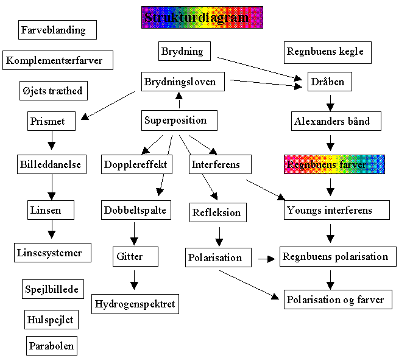

Programmet Regnbuen indeholder en række simulationer i bølgelære, farver, optik og om regnbuens fysik.
I hjælpefilen (og i hæftet »Regnbuen«) findes en række eksperimentelle øvelsesvejledninger. Øvelsesvejledningerne til Regnbuen er udarbejdet af Lars Christensen, Allerød Gymnasium.
Simulationerne til venstre omhandler bølgelære, og simulationerne til højre regnbuen. Forudsætningerne fremgår af pilene

Carl Hemmingsen